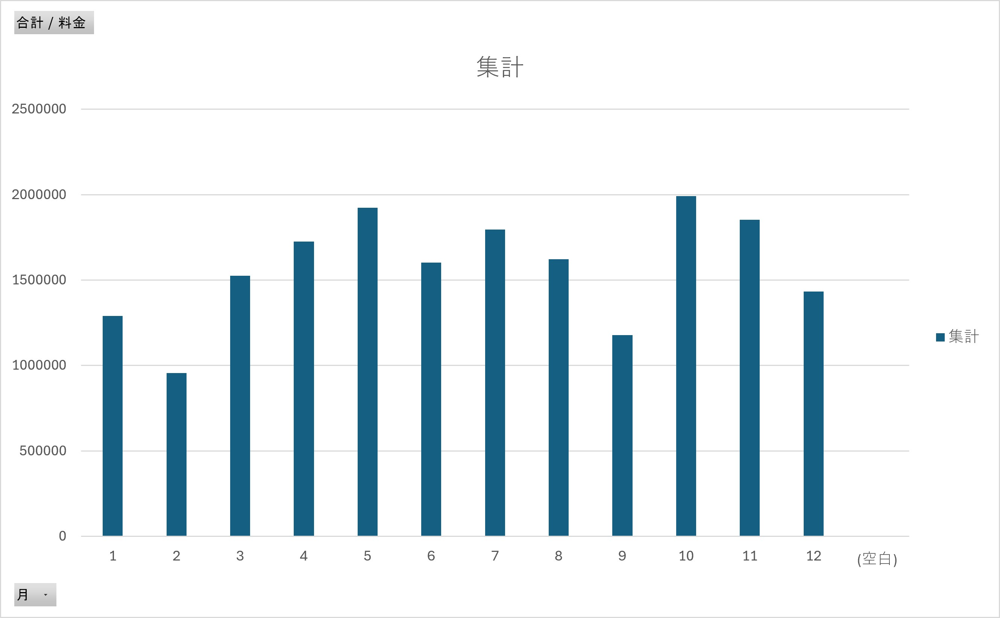
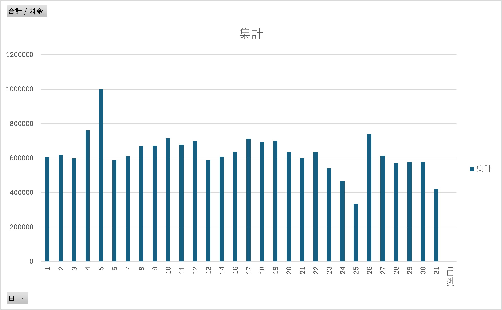
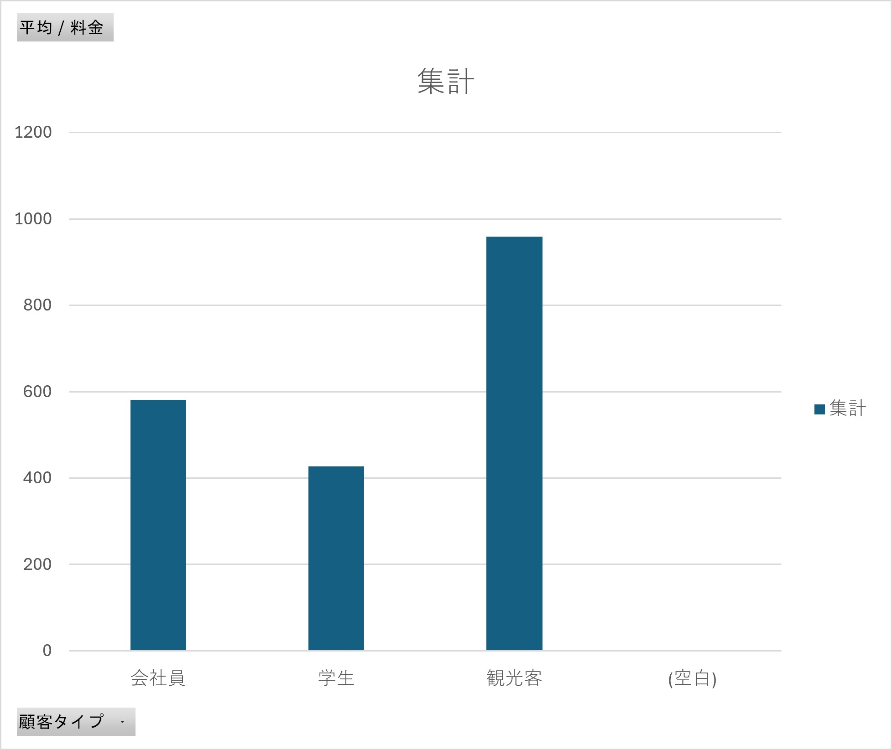
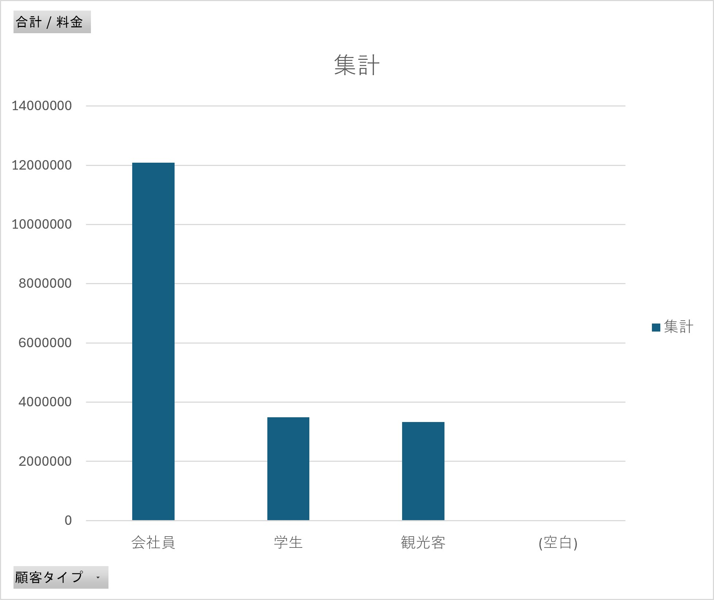
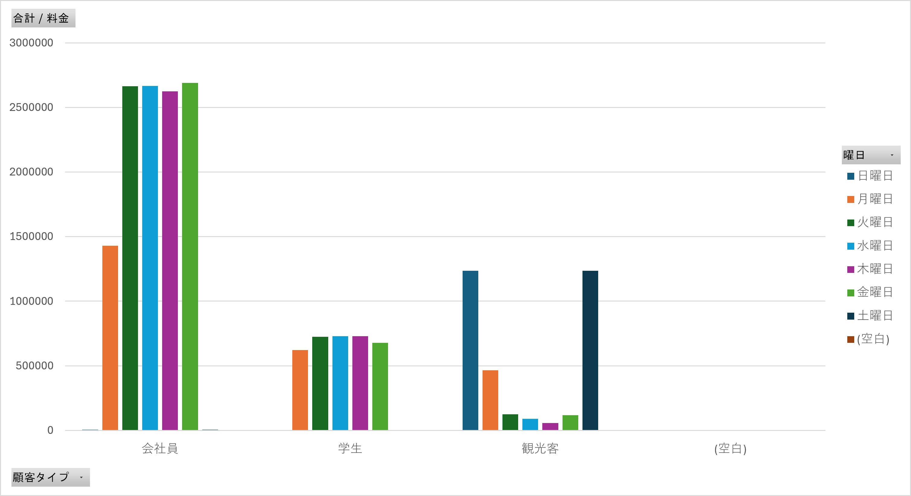

売上金額の分析
月ごとの合計売上金額
5月と10月に山、2月と9月に谷ができるような売り上げの分布。
平均して月に150万円ほどの売り上げを出している。

日ごとの合計売上金額
5日だけ売り上げが他の日と比べて20万円以上高くなっているので、
割引やポイント還元などのセールを行っている可能性がある。
また、22日から25日にかけて売り上げが下がっているので、他店がセールを行っていたり、
特に25日に売り上げが落ち込んでいるのは、給料日なので弁当ではなく店舗で出る料理を
食べたいという会社員の心理があったりするのかもしれない。

週の合計売上金額
平日の売り上げが多いのは学生や会社員が多く利用しているためで、
土日の売り上げは観光客によるものだと考えられる。
平日でも月曜日の売り上げが低いのは、前日が日曜日なので弁当を自分で作って
食べているからだと考えられる。
顧客タイプの分析
顧客タイプごとの平均支払金額
観光客が平均1000円近くの弁当を食べているのに対し、会社員や学生は平均600円以下の弁当を食べている。
観光客は観光に来ているので高い弁当を好んで食べていると考えられる。

顧客タイプごとの合計支払金額
平均金額は会社員が2番手だが、合計では他の項目とトリプルスコア以上の差をつけて圧倒的に多い。
この店舗の中心となる顧客は会社員。

顧客タイプごとの週間合計支払金額
会社員と学生はやはり平日の利用が非常に多く、土日の利用客はほとんどいない。
会社員の月曜日の合計金額の減りが大きいのは、やはり弁当を作ってきているからだと考えられる。
